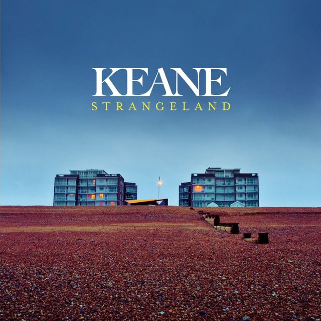
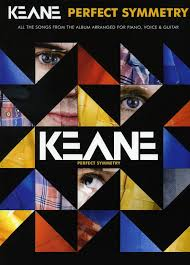

KEANE
Banda inglesa de rock alternativo procedente de Inglaterra. Hasta ahora todos sus materiales discográficos,
Hopes and Fears (2004), Under The Iron Sea (2006), Perfect Symmetry (2008), fueron directos al número
1 de la lista británica de ventas UK Albums Chart, consiguiendo cerca de 10 millones de discos vendidos en total.
Los miembros de Keane son Tim Rice-Oxley como compositor y teclista, Tom Chaplin como vocalista y guitarrista,
Richard Hughes en la batería, y Jesse Quin en el bajo, este último se uniría en 2007.
Keane es
conocido por usar el piano como su principal instrumento en lugar de guitarras durante sus dos primeros
álbumes. Pero, a partir de su tercer álbum, Perfect Symmetry, la banda incluyó las guitarras entre sus instrumentos.
La voz de Tom Chaplin es considerada uno de los factores en el éxito del grupo.
La banda
Integrantes
Tom Chaplin
Tom Chaplin en el año 2000 se une de manera permanente a Keane. Tras su primera actuación, antes de marcharse
a Londres para dedicarse a su carrera musical, comienza a estudiar la titulación en Historia del Arte en la
Universidad de Edimburgo.
Jesse Quin
Jesse empezó su su vida musical desde muy pequeño. El primer instrumento que aprendió a tocar fue la batería. Pero, oficialmente comenzó su carrera musical en el 2007 al formar Jesse Quin & The Mets junto con unos amigos. Luego, en ese mismo año entró al staff del Under The Iron Sea Tour de Keane como asistente de la gira.
Tim Rice-Oxley
Comenzó sus clases de piano cuando era un adolescente, aunque admitió que lo odiaba y nunca practicaba porque
la música clásica lo aburría. Por eso sus padres detuvieron sus clases de piano y lo dejaron que solo tocara
lo que le que le gustaba a él, como los Beatles.
Richard Hughes
Richard aprendio a tocar la batería a los 17 años. Cuando Scott y Rice-Oxley formaron una pequeña banda que tocaba versiones de otros artistas en 1995, fue invitado a participar como baterista. Más tarde invitó al vocalista Tom Chaplin a unirse al grupo.
Somewhere only we know.
Historia

El deseo de formar un grupo apareció en 1995 cuando Rice-Oxley formó un grupo de rock con su amigo Dominic Scott e invitaron a Richard a tocar la batería. Comenzaron como una banda de covers, tocando canciones de U2, Oasis y The Beatles, ensayando en sus casas. Chaplin se unió al grupo en 1997 y se encargó de la voz y la guitarra acústica. Esto, marcó un cambio de nombre, de "The Lotus Eaters" ("Los comedores de loto") a "Cherry Keane", en honor a una amiga de la madre de Tom, quien fue una gran influencia en sus vidas. Luego, el nombre fue acortado a "Keane". Después de escuchar los talentos de Rice-Oxley con el piano durante un fin de semana en Virginia Water, Chris Martin lo invitó a unirse al emergente Coldplay pero Rice-Oxley no aceptó al no querer abandonar a Keane. Teniendo muchas canciones propias, Keane hizo su debut en el "Hope and Anchor" el 13 de julio de 1998. Después de este concierto, a través de 1998 y 1999, el grupo se presentó en muchos pubs de Londres.

A fines de 1999, Keane grabó su primer tema "Call Me What You Like" pero debido al limitado éxito que estaban teniendo, Scott decidió abandonar el grupo. En julio de 2001, el grupo fue invitado por el productor James Sanger a su estudio de grabación en Les Essarts, Francia, donde grabaron algunas canciones incluyendo "Bedshaped" y "This Is The Last Time". Fue durante estas sesiones cuando surgió la idea de usar un piano como instrumento principal. Poco después firmaron a BMG para publicar su música. Poco tiempo después, Simon Williams de Fierce Panda Records asistió a uno de sus conciertos y les ofreció sacar su primer album, "Everybody's Changing" lanzado el 12 de mayo de ese año. Como resultado de la atención creada por este sencillo, una batalla se libró entre las discográficas, y Keane acabó firmando con Island Records el verano de 2003.
Hopes and Fears (2004-2005)
En 2004 crearon su segundo gran tema "Somewhere Only We Know" alcanzando el Top 3 en Inglaterra, luego le siguó "Is It Any Wonder?" en 2006. Su álbum debut Hopes and Fears salió a la venta en 2004. Alcanzó el puesto número uno en las listas de ventas y fue el segundo disco más vendido del año en el Reino Unido. Keane ganó fama en los EE.UU. actuando como teloneros de U2 en la gira mundial. Además, el grupo fue nominado al Grammy como Mejor artista revelación de 2006, pero no lograron ganarlo. Del Hopes And Fears se lanzaron finalmente cinco sencillos: "Somewhere Only We Know", "Everybody's Changing", "Bedshaped", "This Is The Last Time" y "Bend And Break".
Under the Iron Sea (2006-2007)
Desde abril de 2005, la banda preparó su segundo álbum de estudio, producido por Andy Green. La grabación se hizo entre Rye, East Sussex (donde se grabó Hopes and Fears) y Nueva York. El lanzamiento oficial del segundo compacto cuyo título es Under the Iron Sea fue el 12 de junio de 2006 en Europa y ocho días más tarde en Estados Unidos y Canadá. En abril fue estrenado el video "Atlantic" y posteriormente, el 29 de mayo el sencillo "Is It Any Wonder?", que este sencillo es hasta la fecha su #1 en Inglaterra. El álbum llegó al top 1 en su primera semana, y permaneció ahí una semana más. Actualmente el disco ha vendido 2.690.000 copias. El tercer sencillo del álbum fue "Crystal Ball", lanzado el 21 de agosto de este año. También está previsto para el 30 de octubre el lanzamiento de "Nothing In My Way" como el cuarto sencillo del álbum. Hay dos cuartos sencillos que son "A Bad Dream" (lanzado a la venta el 22 de enero de 2007), y "Try Again", puesto a la venta en la misma fecha pero sólo en Alemania. De él se pueden encontrar tres versiones con portadas de diferentes colores, aunque con la misma imagen. Todas ellas incluyen rarezas, "caras B" o material multimedia. A principios de 2007, Keane inició su gira mundial, actuando en varios países de Europa. Prosiguieron la gira en Sudamérica: el 13 de abril actuaron en Buenos Aires (Argentina), en el festival Quilmes Rock 2007. Después de Argentina, Keane se presentó en Chile el 15 de abril. Posteriormente actuaron en Brasil: el 17 y el 18 de abril lo hicieron en el Credicard Hall de São Paulo, y el 19 de abril en el Claro Hall de Río de Janeiro. Acabando su gira por Sudamérica, se presentaron en México. El 24 de abril dieron una concierto en el Auditorio Coca-Cola de Monterrey, el 26 de abril en el Arena VFG de Guadalajara, y el 27 de abril en el Auditorio Nacional de Ciudad de México, siendo éste el último concierto de la gira latinoamericano. En mayo de 2007, realizaron su gira norteamericana, y en junio actuaron por toda Inglaterra. Durante el verano de 2007 estaba prevista la actuación de la banda dentro del festival Aguaviva Canarias, que se celebra en Tenerife (España). La actuación fue finalmente cancelada. Actuaron en el Natural Music Festival que se celebró en El Ejido (Almería, España), el 4 de agosto de 2007. A finales del año 2007, Keane lanzó un sencillo que fue hecho para ser lanzado en el Under The Iron Sea, pero que no llegó a entrar finalmente al álbum, el sencillo se llamó The Night Sky. Este sencillo se lanzó a beneficencia de la War Child Fundation. Durante la pequeña gira que se hizo en el Reino Unido para promocionar este sencillo fue la primera vez que Jesse Quin tocó con Keane, como miembro de apoyo. Finalmente, del álbum se desprendieron seis sencillos: "Atlantic", "Is It Any Wonder?", "Crystal Ball", "Nothing In My Way", "Try Again" y "A Bad Dream".
Perfect Symmetry (2008-2009)
El tercer álbum de estudio de la banda Perfect Symmetry salió a la luz el 13 de octubre de 2008, y en su primera semana llegó al número 1 de las listas de ventas del Reino Unido y el número 7 en el Billboard 200 de Estados Unidos. El álbum se preparó en estudios de París, Berlín y Londres. El disco ha recibido críticas muy variadas, la mayoría lo nombran como el mejor álbum de la banda en cuanto a ventas, entre las que cabe destacar la mayor puntuación que le ha dado la revista Rolling Stone a Keane.36 Desde la preparación de Perfect Symmetry, se unió a la banda Jesse Quin, como bajista y percusionista. Este músico, también británico, apareció por primera vez en vivo con Keane durante los conciertos que dio la banda para la promoción del sencillo "The Night Sky". Quin se hizo inmediatamente muy amigo del trío británico, quienes lo invitaron para las sesiones de grabación del Perfect Symmetry. El músico británico fue una fuente de ideas, además de ser un músico multiinstrumental talentoso, tanto fue así que se quedó con el trío para todas las sesiones de grabación y además también los acompañó durante la gira "Perfect Symmetry Tour" entre 2008 y 2009, haciéndose querido por los fans y logrando crear una imagen de cuarteto para muchos de ellos, es por eso que es conocido como el Cuarto Keane, pero no había sido incluido oficialmente en la banda, en ese momento. En diciembre de 2008, el disco Perfect Symmetry fue nombrado el mejor del año por Q Magazine y Q Radio. El sencillo "Perfect Symmetry" también fue elegido como la mejor canción del año.37 Del álbum se desprendieron cuatro sencillos: "Spiralling", "The Lovers Are Losing", "Perfect Symmetry" y "Better Than This".
Night Train EP (2010)
En el video de una entrevista con la NME, Tom Chaplin indicó que la banda habría programado el lanzamiento de un mini-álbum en mayo de 2010. Se mencionó que se incluiría en el disco una colaboración con el rapero somalí-canadiense K'naan, y se dice que colaborarían en una canción con Kanye West. Originalmente, ambas los lanzamientos de las colaboraciones estaban previstos para finales del 2009.38 Con K'Naan grabaron dos canciones, el sencillo "Stop For A Minute" (incluida en el juego Pro Evolution Soccer 2011) y la canción "Looking Back". También la cantante japonesa Tigarah colaboró en una canción, cantando en japonés en el cover de la canción "Ishin Densin (You've Got To Help Yourself)" de la banda japonesa Yellow Magic Orchesta. Luego de estos anuncios, el 29 de noviembre fue confirmado que el miniálbum sería un EP titulado Night Train,39 cuya fecha oficial de lanzamiento fue el 10 de mayo del 2010. Para promocionar el EP hicieron el "Night Train Tour", con el cual recorrieron, como parte del "Forest Tour", los bosques más importantes del Reino Unido (con lleno total). Luego continuaron por recintos pequeños e íntimos en el Reino Unido, festivales en Europa, y algunas fechas en Estados Unidos y Canadá, donde finalizó. El EP sólo tuvo un sencillo: "Stop For A Minute".
Strangeland (2012-2013)
Después de la gira de Mt. Desolation, proyecto alterno de Tim Rice-Oxley y Jesse Quin, terminada en noviembre de 2010, la banda se reunió para empezar la pre-producción del nuevo álbum de estudio de Keane, cuarto de su carrera. Dos canciones fueron presentadas anteriormente: «Sovereign Light Cafe» (durante el Perfect Symmetry World Tour) y «Disconnected» (durante el Night Train Tour). Jesse Quin fue incluido oficialmente en la banda el 3 de febrero de 2011, luego de haber sido miembro no oficial desde el 2008, por lo que desde ese momento, Keane se convirtió oficialmente en cuarteto. Tras dedicar todo 2011 a componer y grabar, el disco se terminó el 12 de enero de 2012. Posteriormente, el 18 de enero Keane anunció dos presentaciones en Bexhill el 9 y 10 de marzo, los cuales servirán para presentar el nuevo disco y tocar nuevas canciones en directo por primera vez. El 10 de febrero Keane terminó la mezcla del álbum. La banda lanzó el primer sencillo «Silenced By The Night» el 13 de marzo de 2012 y para abril en el Reino Unido, con una presentación el día anterior en el programa Jimmy Kimmel Live!. Los siguientes sencillos «Disconnected» y «Sovereign Light Cafe» fueron lanzados entre abril y mayo, a la vez fueron grabados videos musicales en ambos casos. El lanzamiento oficial del nuevo álbum de estudio, Strangeland se dio el día 7 de mayo de 2012. De nueva cuenta el álbum llegó al número 1 de la lista británica de ventas UK Albums Chart, convirtiéndose así en el quinto lanzamiento de la banda en alcanzar dicha posición en la lista británica. Ellos continuaron durante 2012 y 2013 promocionando el nuevo álbum en la gira Strangeland Tour que visitó Europa, Norte América, Sudamérica y Oriente Medio en más de 60 espectáculos. Del álbum se desprendieron tres sencillos: Silenced By The Night, Disconnected y Sovereign Light Café.
The Best of Keane y separación temporal (2013-presente)
Después de un largo tiempo en gira (marzo 2012-agosto 2013), la banda reveló en agosto de 2013 que saldría a la venta su disco recopilatorio "The Best of Keane", que estaría disponible el 11 de noviembre del mismo año, y que contendría los mejores temas de la banda así como 2 canciones nuevas, motivo de los 10 años desde que publicaron "Hopes & Fears" y entraron en la escena musical del Britpop. El 20 de octubre de 2013 se anunció que la banda se separaría temporalmente, de manera indefinida, para que cada integrante se enfocara en proyectos personales por separado. La separación se hizo efectiva después de que el cuarteto británico lanzó al mercado el recopilatorio, The Best of Keane, el 11 de noviembre. De este recopilatorio se desprendieron dos sencillos: Higher than the Sun y Won't be Broken. Se anunció que el cantante, Tom Chaplin, lanzará un álbum como solista; que el compositor y tecladista, Tim Rice-Oxley y el bajista, guitarrista y tecladista, Jesse Quin, retomarán Mt. Desolation, proyecto alterno que fundaron en el año 2010, y lanzarán un segundo álbum de estudio; mientras que aún no se sabe que proyectos realizará el baterista, Richard Hughes.
Influencias
La banda ha citado artistas como Rufus Wainwright,40U2,41 Nick Drake,42 Blur, Oasis, Depeche Mode,43 R.E.M., Massive Attack, David Bowie, The Beatles, Paul Simon, Genesis, A-ha, The Cult, Simple Minds, Radiohead, Pet Shop Boys, Queen, Blondie y Michael Jackson como influencias. "Creo que nuestra principal influencia es el escribir canciones de rock que lleguen a ser clásicas más que alguna banda en particular -adoramos a personas como Nick Drake que vierten mucha emoción en sus canciones y escriben álbumes que serán recordados por muchos años- álbumes que estarán en las colecciones musicales de las personas por el resto de sus vidas."
Discografía
| Año | Album | Tapa | Canciones |
|---|---|---|---|
| 2000 | A bad Dream |
|
|
| 2001 | Strangeland |  |
|
| 2002 | Under the iron sea |
|
|
| 2003 | Perfect symmetry |  |
|
| 29 | Hopes and Fears |
.jpg)
|
|